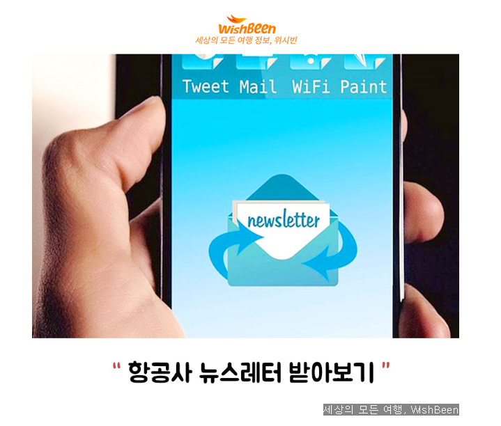
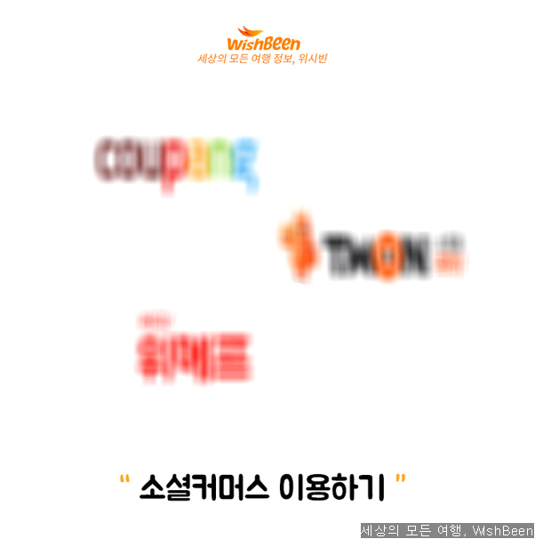
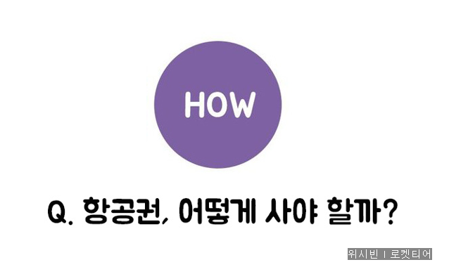
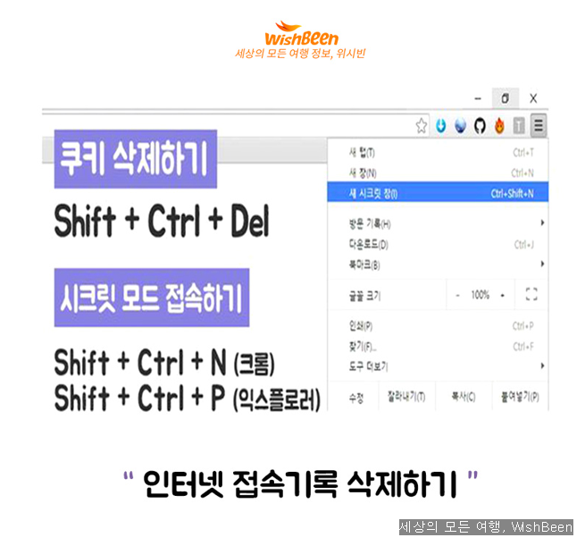

항공권 저렴하게 사는 꿀팁


특가 항공권을 여행 가기 3개월 전에 가장 많이 풀려요!
예매는 빠를수록 좋지만, 미리 하기 힘든 상황이라면 늦어도 6주 전엔 예매하기!

다음은 특가 이벤트, 저가 운임, 특가 정보 등을 제일 빨리 받아볼 수 있는 항공사 뉴스레터인데요!
자신이 원하는 항공사의 뉴스레터를 받아보는 것만으로도 항공권 득템이 더 쉬워진답니다:)
구입 날짜에 따라 항공권 가격도 천차만별! 평균적으로 일요일에 사는 것이 가장 저렴하지만 각종 할인 이벤트와 세일은 화요일에 많이 실시되는 편이에요!

출발/도착일 역시 고려해야 해요. 보통 일, 월, 화요일에 출발하는 항공편이 저렴하며, 일요일 도착과 같이 주말을 끼면 평일보다 훨씬 비싸지죠.
또 아침, 낮 시간보다는 밤이나 새벽 편이 저렴하답니다:)

꼭 남들 다 가는 성수기에 여행할 필요는 없는 법! 한국에선 11월 출발 티켓이 가장 저렴하다고 하는데요.


한 번에 가격 비교를 할 수 있는 앱을 활용하면 좋아요. 수많은 항공편 중에서 가장 저렴한 것을 선택하면 되거든요:)

항공사 프로모션이 진행되면 가격 비교 사이트보다 저렴할 때도 있다고 하는데요.
그러니 개인별로 선호하는 항공사 홈페이지에 들어가 한 번 확인해 보는 게 좋겠죠?

쿠팡, 티몬, 위메프와 같은 소셜 커머스는 항공권 사이트 못지않게 싸게 판매한다고 해요.


이게 무슨 말이냐고요? 여러 사이트에 접속하다 보면 PC에 인터넷 사용기록(쿠키)이 남게 돼 그 기록에 따라 항공권 가격을 다르게 보여준다고 해요!
그러니 항공권 구매 전엔 꼭 쿠키를 삭제하고, 시크릿 모드로 접속하자고요!
출처 https://www.pikicast.com/#!/menu=landing&content_id=227517